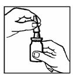
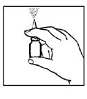
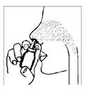

RÉSUMÉ DES CARACTÉRISTIQUES DU PRODUIT
ANSM - Mis à jour le : 01/03/2013
DESONAIR 64 microgrammes/dose, suspension pour pulvérisation nasale
2. COMPOSITION QUALITATIVE ET QUANTITATIVE
Une bouffée (dose) de pulvérisation nasale correspond à 0,05 ml de suspension et contient 64 microgrammes de budésonide.
Excipients: 0,06 mg de sorbate de potassium / 0,05 ml de suspension pour pulvérisation nasale
Pour la liste complète des excipients, voir rubrique 6.1.
Suspension pour pulvérisation nasale.
Suspension homogène blanche.
4.1. Indications thérapeutiques
Traitement des symptômes de la rhinite allergique saisonnière et per annuelle.
Traitement des symptômes de la polypose nasale.
4.2. Posologie et mode d'administration
Réservé à l'administration par voie nasale.
La posologie sera adaptée individuellement en fonction de l'état clinique. Il convient de toujours rechercher la dose minimale efficace.
La durée du traitement par DESONAIR, suspension pour pulvérisation nasale doit être limitée à la période d'exposition à l'allergène et dépend de la nature et des caractéristiques de l'allergène. Une utilisation régulière est recommandée pour obtenir un effet thérapeutique optimal.
Rhinite allergique
Dose initiale
Adultes, Adolescents et enfants à partir de 6 ans:
La posologie initiale préconisée est de 256 microgrammes par jour, administrés en 2 prises par jour matin et soir ou en une prise par jour le matin.
Soit, DESONAIR 64 microgrammes/dose, suspension pour pulvérisation nasale :
· 2 pulvérisations dans chaque narine le matin
ou
· 1 pulvérisation dans chaque narine le matin et le soir
Chez les enfants le traitement sera administré sous la surveillance d'un adulte.
Le traitement de la rhinite allergique saisonnière sera instauré, si possible, avant l'exposition du patient aux allergènes.
Il peut être nécessaire d'ajouter un traitement complémentaire pour traiter les symptômes oculaires liés à l'allergie.
Dose d'entretien
L'effet clinique optimal apparaît en 1 à 2 semaines environ.
Il convient ensuite de rechercher la dose minimale efficace assurant le contrôle des symptômes.
Il n'est pas obtenu d'augmentation de l'efficacité avec les doses dépassant 256 microgrammes par jour.
Polypes nasaux
Adultes, Adolescents et enfants à partir de 6 ans:
La dose préconisée pour le traitement de la polypose nasale est de 256 microgrammes par jour, administrés en une prise par jour le matin ou en 2 prises matin et soir.
Soit, DESONAIR 64 microgrammes/dose, suspension pour pulvérisation nasale :
· 2 pulvérisations dans chaque narine le matin
ou
· 1 pulvérisation dans chaque narine le matin et le soir
Chez l'enfant, le traitement sera administré sous la surveillance d'un adulte
Lorsque l'effet thérapeutique est obtenu, il convient de rechercher la dose minimale efficace.
Mode d'administration
1. Il convient de se moucher doucement avant administration, afin d'assurer la perméabilité des voies nasales,
2. Agiter le flacon (figure 1). Retirez le capuchon de protection.

Figure 1.
3. Maintenir le flacon vertical comme indiqué dans la figure 2 (ci-dessous). Avant d'utiliser DESONAIR, suspension pour pulvérisation nasale pour la première fois, l'embout nasal devra être amorcé (c'est-à-dire rempli de la suspension). Exercer une pression sur l'embout plusieurs fois de suite (5-10 fois) pour pomper le produit et produire la pulvérisation d'un brouillard homogène dans l'air. L'effet d'amorçage persiste environ 24 heures. Au-delà, l'embout doit être réamorcé. Si DESONAIR, suspension pour pulvérisation nasale est utilisé dans un intervalle plus court, il suffit de libérer une pulvérisation dans l'air avant d'administrer le traitement dans les narines.

Figure 2.
4. Introduire l'extrémité de l'embout dans chaque narine (voir figure 3 ci-dessous). Effectuer une pulvérisation (ou plusieurs selon la prescription médicale). L'opération sera répétée de la même façon dans la narine controlatérale.
Remarque: il n'est pas nécessaire d'inspirer en même temps que la pulvérisation du produit.

Figure 3.
5. Essuyer l'embout avec un tissu propre et remettre le bouchon de protection.
6. La flacon sera conservé en position verticale.
Nettoyage du flacon de DESONAIR, suspension pour pulvérisation nasale
L'embout en plastique du flacon de DESONAIR pour pulvérisation nasale doit être nettoyé régulièrement, et à chaque fois qu'il survient un défaut de fonctionnement du pulvérisateur. Dans ce cas, il convient avant tout de vérifier que l'embout est bien amorcé (voir plus haut comment amorcer l'embout). Si, après l'amorçage, la pulvérisation n'apparaît toujours pas, il convient de nettoyer l'embout selon les instructions suivantes :
· Retirer l'embout en plastique avec un tissu propre et le laver à l'eau (pas trop chaude).
· Rincer soigneusement l'embout, le sécher et le remettre sur le flacon.
· Ne jamais essayer de déboucher l'embout avec une aiguille ou un objet pointu.
· Après le nettoyage de l'embout, celui-ci devra être réamorcé (rempli de la suspension) avant son utilisation.
Hypersensibilité à la substance active ou à l'un des excipients.
4.4. Mises en garde spéciales et précautions d'emploi
L'utilisation prolongée des corticoïdes par voie nasale augmente le risque de retentissement systémique. Un retard de croissance a été décrit chez des enfants ayant reçu des corticoïdes par voie nasale aux doses thérapeutiques.
Par conséquent, la taille des enfants devra être régulièrement surveillée en cas d'administration prolongée de corticoïdes par voie nasale. En cas de ralentissement staturo-pondéral, le traitement doit être réévalué et la dose minimale efficace assurant un contrôle des symptômes devra être recherchée.
De plus, un avis pédiatrique spécialisé est recommandé.
L'administration de corticoïdes par voie nasale à des doses supérieures à celles préconisées peut provoquer une insuffisance surrénale cliniquement significative. Si un patient a reçu une corticothérapie prolongée à fortes doses, un traitement corticoïde de substitution par voie systémique doit être envisagé pendant une période de stress ou en cas de chirurgie.
En cas d'infections nasales bactériennes ou fongiques, DESONAIR suspension pour pulvérisation nasale ne doit être utilisé sans que soit instauré un traitement antibactérien ou antifongique concomitant.
En cas de traitement continu prolongé, des examens réguliers de la muqueuse nasale sont recommandés par exemple tous les 6 mois.
L'insuffisance hépatique entraîne des modifications significatives des paramètres pharmacocinétiques des corticoïdes. Chez l'insuffisant hépatique, lors de l'administration par voie orale on observe une augmentation de la biodisponibilité systémique et une diminution de l'élimination. Lorsqu'il est administré par voie intraveineuse, la pharmacocinétique du budésonide reste globalement inchangée chez le volontaire sain et en cas de cirrhose. La prudence est recommandée lors de l'administration de DESONAIR, suspension pour pulvérisation nasale, chez les sujets insuffisants hépatiques sévères compte tenu des risques d'effets systémiques.
L'administration de DESONAIR suspension pour pulvérisation nasale n'est pas recommandée chez les patients sujets aux épistaxis et en cas d'herpès buccal, nasale ou ophtalmique.
L'administration de DESONAIR suspension pour pulvérisation nasale n'est pas recommandée chez les patients présentant une ulcération nasale ou ayant subi une intervention chirurgicale récente ou traumatisme nasal, tant que la disparition des lésions n'est pas complète.
La prudence est requise en cas de tuberculose.
L'utilisation de DESONAIR suspension pour pulvérisation nasale n'est pas recommandée en cas d'infections respiratoires.
Le patient doit être informé que l'effet optimal est atteint après plusieurs jours de traitement. Le traitement de la rhinite saisonnière sera, si possible, débuté un peu avant l'exposition aux allergènes.
Ce médicament contient du sorbate de potassium et peut provoquer des réactions cutanées (par exemple, dermatite de contact).
4.5. Interactions avec d'autres médicaments et autres formes d'interactions
L'administration concomitante par voie orale de 200 mg/jour de kétoconazole et de budésonide (3 mg en dose unique), multiplie en moyenne d'un facteur 6 les concentrations plasmatiques de budésonide.
Lors d'une administration orale de kétoconazole environ 12 heures après le budésonide, les concentrations de budésonide sont en moyenne multipliées d'un facteur trois. Il n'y a pas d'information actuellement disponible sur l'interaction dans le cas d'une administration nasale du budésonide, mais une augmentation des concentrations plasmatiques est probable. En l'absence de donnée, il ne peut être formulé de recommandations spécifiques et il convient d'éviter dans la mesure du possible l'association de budésonide et de kétoconazole ou de les administrer à distance l'un de l'autre. Une diminution de la posologie peut également être envisagée. L'administration concomitante d'autres inhibiteurs puissants du CYP3A4 (par exemple kétoconazole, ciclosporine, éthinylœstradiol et troléandomycine) est susceptible de provoquer une importante augmentation des concentrations plasmatiques de budésonide.
L'utilisation du budésonide au cours d'un nombre limité de grossesses (plus de 2 000) n'a apparemment révélé aucun effet délétère sur la grossesse ou pour le fœtus / le nouveau-né. A ce jour, il n'existe pas d'autres données épidémiologiques pertinentes. Les études effectuées chez l'animal ont mis en évidence une toxicité sur la reproduction (voir rubrique 5.3.). Le risque potentiel en clinique n'étant pas connu, DESONAIR, suspension pour pulvérisation nasale ne doit être utilisé chez la femme enceinte qu'en cas d'absolue nécessité.
De même, en l'absence de données sur l'excrétion du budésonide dans le lait maternel, l'utilisation pendant l'allaitement ne doit être envisagé que si les bénéfices thérapeutiques pour la mère l'emportent sur les risques potentiels pour le nouveau-né.
4.7. Effets sur l'aptitude à conduire des véhicules et à utiliser des machines
DESONAIR, suspension pour pulvérisation nasale n'a aucune influence sur l'aptitude à conduire des véhicules et à utiliser des machines.
Après une corticothérapie par voie systémique (orale ou parentérale), l'administration de DESONAIR, suspension pour pulvérisation nasale est susceptible de démasquer des pathologies sous jacentes dont les symptômes étaient auparavant contrôlés par la corticothérapie systémique comme, par exemple, une conjonctivite ou une dermatite allergiques. Un traitement spécifique pourra alors être ajouté si nécessaire.
Les corticoïdes par voie nasale peuvent avoir des effets systémiques, notamment lorsqu'ils sont administrés à doses élevées.
Les effets indésirables ont été définis de la façon suivante:
· très fréquents (≥1/10)
· fréquents (≥1/100, <1/10)
· peu fréquents (≥1/1 000, <1/100)
· rares (≥1/10 000, <1/1 000)
· très rares (<1/10 000), fréquence indéterminée (la fréquence ne peut être estimée sur la base des données disponibles)
|
Affections respiratoires, thoraciques et médiastinales |
Fréquents: effets locaux tels que irritation de la muqueuse nasale, saignements dans les sécrétions nasales, épistaxis (immédiatement après l'application) |
|
|
Très rares: ulcérations de la muqueuse nasale, perforation de la cloison nasale |
|
Affections de la peau et du tissu sous-cutané |
Peu fréquents: réaction d'hypersensibilité immédiate ou retardée (urticaire, éruption, prurit, dermatite, angio-œdème) |
|
Affections oculaires |
Rares: glaucome, cataracte (en cas de traitement au long cours) |
|
Affections musculo-squelettiques et systémiques |
Rares: ostéoporose (en cas de traitement au long cours) |
|
Affections endocriniennes |
Rares: retard de croissance chez l'enfant (voir rubrique 4.4), |
Même en cas d'administration du contenu entier du flacon en une seule fois, le risque de d'intoxication aigu par DESONAIR suspension pour pulvérisation nasale est improbable.
L'administration de doses supérieures à celles recommandées (voir rubrique 4.2) pendant une période prolongée (plusieurs mois) peut être à l'origine d'une inhibition de l'axe hypothalamo-hypophysosurrénalien.
5. PROPRIETES PHARMACOLOGIQUES
5.1. Propriétés pharmacodynamiques
Classe pharmacothérapeutique: DECONGESTIONNANTS ET AUTRES PREPARATIONS NASALES A USAGE TOPIQUE, CORTICOIDES, Code ATC: R01AD05.
Administré par voie nasale, le budésonide est un glucocorticoïde qui exerce un effet topique anti-inflammatoire puissant sur la muqueuse nasale avec une faible exposition systémique.
5.2. Propriétés pharmacocinétiques
Après administration intranasale, le budésonide est absorbé par la muqueuse nasale et à un moindre degré par la muqueuse gastro-intestinale. La biodisponibilité systémique du budésonide représente 33 % de la dose administrée par voie intranasale.
Chez l'adulte, après administration de 256 microgrammes de budésonide, la concentration plasmatique maximale (Cmax) est atteinte en 0,7 heures et s'élève à 0,64 nmol/l.
L'aire sous la courbe (AUC) des concentrations plasmatiques après l'administration de 256 microgrammes de DESONAIR, suspension pour pulvérisation nasale est de 2,7 nmol*h/l chez l'adulte et de 5,5 nmol*h/l chez l'enfant, marquant une exposition systémique supérieure chez l'enfant.
Aux doses thérapeutiques, la pharmacocinétique du budésonide est linéaire.
Le volume de distribution du budésonide est d'environ 3 l/kg. La liaison aux protéines est de 85-90 %.
Le budésonide est principalement métabolisé par l'iso-enzyme CYP3A4. Sa clairance systémique est élevée (environ 1,2 l/min) et sa demi-vie plasmatique est en moyenne d'environ 4 heures après une administration par voie intraveineuse. Les métabolites sont éliminés par voie urinaire sous forme inchangée ou conjuguée. Les métabolites principaux, le 6-bêta-hydroxybudésonide et la 16-alphahydroxyprednisolone, n'exerce quasiment aucune efficacité.
Administré par voie orale, le budésonide subit un métabolisme de premier passage hépatique rapide et intense (90 %), qui le transforme en métabolites ayant une plus faible activité glucocorticoïde. Le budésonide n'est pas métabolisé localement par la muqueuse nasale.
5.3. Données de sécurité préclinique
Les données non cliniques issues des études conventionnelles de toxicologie en administration répétée, génotoxicité, cancérogénèse, et des fonctions de reproduction, n'ont pas révélé de risque particulier pour l'homme aux doses thérapeutiques.
Les glucocorticoïdes, dont le budésonide, ont des effets tératogènes chez l'animal, notamment des fentes palatines et des anomalies osseuses. Il est peu probable que des effets de ce type apparaissent chez l'homme aux doses thérapeutiques.
Cellulose dispersible (cellulose microcristalline et carboxyméthylcellulose sodique, (89: 11, m/m)), polysorbate 80, sorbate de potassium (E 202), glucose anhydre, édétate disodique, acide chlorhydrique concentré, acide ascorbique, eau purifiée.
Sans objet.
2 ans.
Après la première ouverture: 3 mois.
6.4. Précautions particulières de conservation
A conserver à une température ne dépassant pas 30°C.
Ne pas congeler.
6.5. Nature et contenu de l'emballage extérieur
120 doses en flacon verre brun muni d'une pompe nasale et d'un embout nasal (polypropylène).
Boîte de 1, 3 ou 10 flacons.
Toutes les présentations peuvent ne pas être commercialisées.
6.6. Précautions particulières d’élimination et de manipulation
Pas d'exigences particulières.
7. TITULAIRE DE L’AUTORISATION DE MISE SUR LE MARCHE
SANDOZ
49 AVENUE GEORGES POMPIDOU
92593 LEVALLOIS-PERRET CEDEX
8. NUMERO(S) D’AUTORISATION DE MISE SUR LE MARCHE
· 398 887-4 ou 34009 398 887 4 3: 120 doses en flacon avec pompe et embout nasal. Boîte de 1.
· 398 888-0 ou 34009 398 888 0 4: 120 doses en flacon avec pompe et embout nasal. Boîte de 3.
· 576 454-1 ou 34009 576 454 1 0: 120 doses en flacon avec pompe et embout nasal. Boîte de 10.
9. DATE DE PREMIERE AUTORISATION/DE RENOUVELLEMENT DE L’AUTORISATION
[à compléter par le titulaire]
10. DATE DE MISE A JOUR DU TEXTE
[à compléter par le titulaire]
Sans objet.
12. INSTRUCTIONS POUR LA PREPARATION DES RADIOPHARMACEUTIQUES
Sans objet.
Liste I.